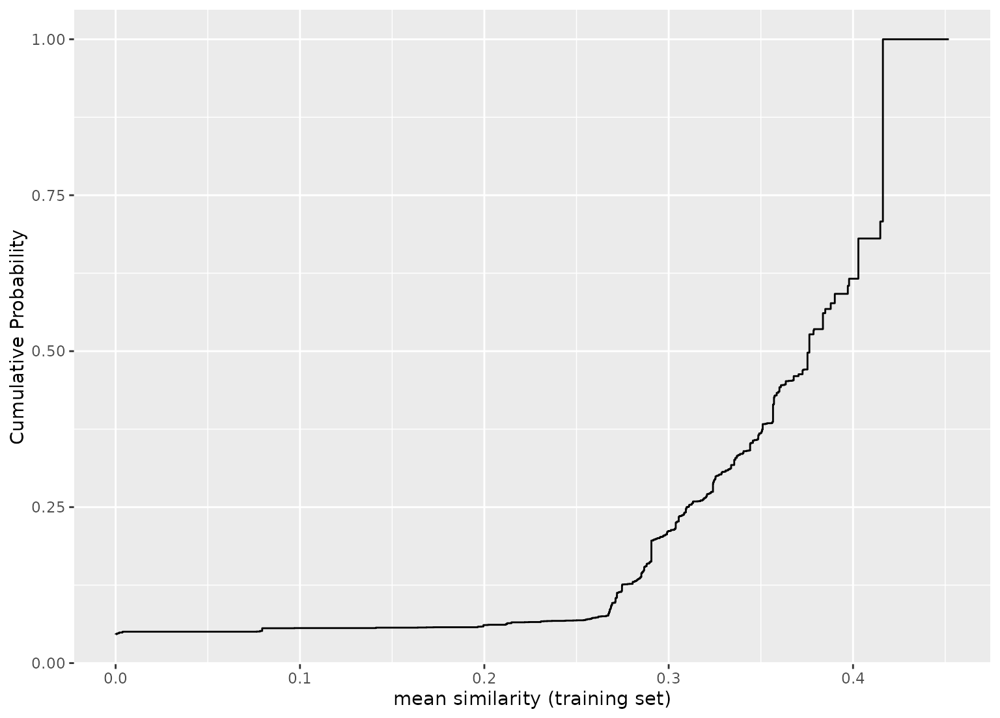

R/similarity.R
apd_similarity.Rdapd_similarity() is used to analyze samples in terms of similarity scores
for binary data. All features in the data should be binary (i.e. zero or
one).
apd_similarity(x, ...)
# S3 method for default
apd_similarity(x, quantile = NA_real_, ...)
# S3 method for data.frame
apd_similarity(x, quantile = NA_real_, ...)
# S3 method for matrix
apd_similarity(x, quantile = NA_real_, ...)
# S3 method for formula
apd_similarity(formula, data, quantile = NA_real_, ...)
# S3 method for recipe
apd_similarity(x, data, quantile = NA_real_, ...)Depending on the context:
A data frame of binary predictors.
A matrix of binary predictors.
A recipe specifying a set of preprocessing steps
created from recipes::recipe().
Options to pass to proxyC::simil(), such as method. If no
options are specified, method = "jaccard" is used.
A real number between 0 and 1 or NA for how the similarity
values for each sample versus the training set should be summarized. A value
of NA specifies that the mean similarity is computed. Otherwise, the
appropriate quantile is computed.
A formula specifying the predictor terms on the right-hand side. No outcome should be specified.
When a recipe or formula is used, data is specified as:
A data frame containing the binary predictors. Any predictors with no 1's will be removed (with a warning).
A apd_similarity object.
The function computes measures of similarity for different samples
points. For example, suppose samples A and B both contain p binary
variables. First, a 2x2 table is constructed between A and B across
their elements. The table will contain p entries across the four cells
(see the example below). From this, different measures of likeness are
computed.
For a training set of n samples, a new sample is compared to each, resulting in n similarity scores. These can be summarized into a single value; the median similarity is used by default by the scoring function.
For this method, the computational methods are fairly taxing for large data sets. The training set must be stored (albeit in a sparse matrix format) so object sizes may become large.
By default, the computations are run in parallel using all possible
cores. To change this, call the setThreadOptions function in the
RcppParallel package.
Leach, A. and Gillet V. (2007). An Introduction to Chemoinformatics. Springer, New York
# \donttest{
data(qsar_binary)
jacc_sim <- apd_similarity(binary_tr)
jacc_sim
#> Applicability domain via similarity
#> Reference data were 67 variables collected on 4330 data points.
#> New data summarized using the mean.
# plot the empirical cumulative distribution function (ECDF) for the training set:
library(ggplot2)
autoplot(jacc_sim)

# Example calculations for two samples:
A <- as.matrix(binary_tr[1, ])
B <- as.matrix(binary_tr[2, ])
xtab <- table(A, B)
xtab
#> B
#> A 0 1
#> 0 62 0
#> 1 1 4
# Jaccard statistic
xtab[2, 2] / (xtab[1, 2] + xtab[2, 1] + xtab[2, 2])
#> [1] 0.8
# Hamman statistic
((xtab[1, 1] + xtab[2, 2]) - (xtab[1, 2] + xtab[2, 1])) / sum(xtab)
#> [1] 0.9701493
# Faith statistic
(xtab[1, 1] + xtab[2, 2] / 2) / sum(xtab)
#> [1] 0.9552239
# Summarize across all training set similarities
mean_sim <- score(jacc_sim, new_data = binary_unk)
mean_sim
#> # A tibble: 5 × 2
#> similarity similarity_pctl
#> <dbl> <dbl>
#> 1 0.376 49.8
#> 2 0.284 13.5
#> 3 0.218 6.46
#> 4 0.452 100
#> 5 0.0971 5.59
# }